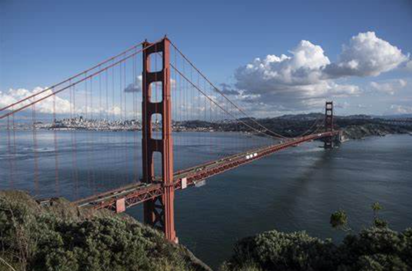
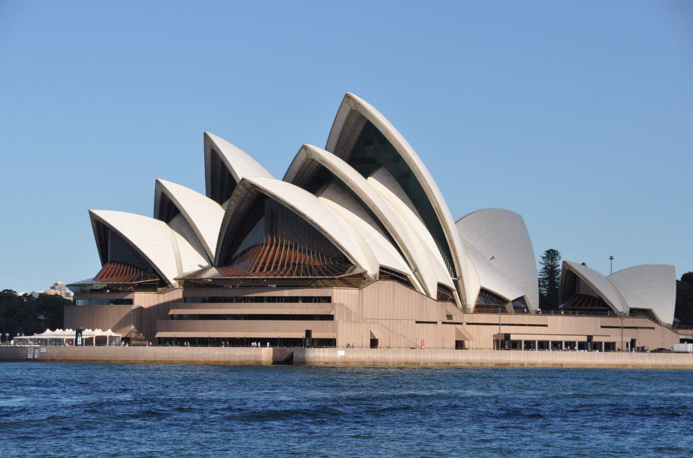
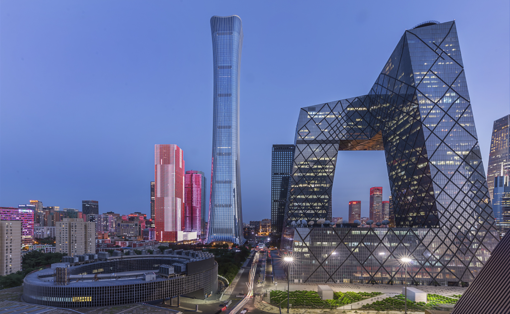
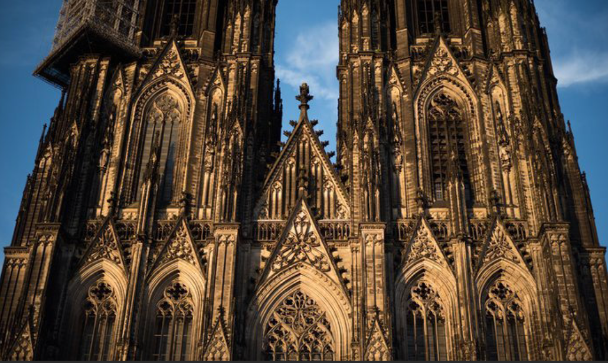

There are some mega-metropolises on this planet with incredible skylines.
Visit them all via these live webcam feeds of cityscapes streaming from the seven continents.

 Local Time
Local Time  Temp 37°C / 99°F
Temp 37°C / 99°F


There are some mega-metropolises on this planet with incredible skylines.
Visit them all via these live webcam feeds of cityscapes streaming from the seven continents.